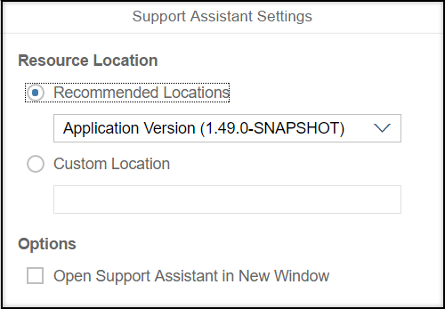
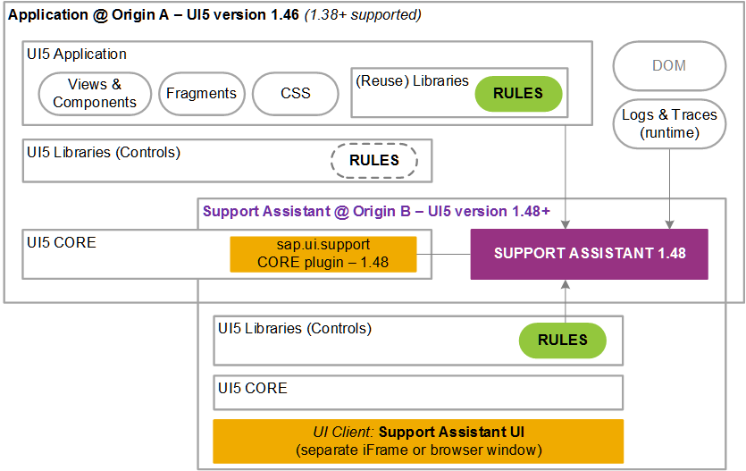

In some cases you may want to run the Support Assistant against a different version of
OpenUI5. You can do so by
following a few steps.
Prerequisites
The minimum OpenUI5 version in
which the Support Assistant is available is 1.44.17.
Procedure
-
Open the Technical Information Dialog using the shortcut
CTRL
+ SHIFT
+ ALT
+ P
.
-
Choose the settings button for the Support Assistant (
 ).
).
-
Select a predefined version from the dropdown, or select Custom
Location to paste a custom URL in the input field.

Technical Information Dialog: Support Assistant Settings
Note
When you choose a custom location, keep in mind that the URL should match the protocol of
the application. For example, if the application is HTTP, the location
should also be HTTP. If it is HTTPS, the location should be HTTPS. The
URL should also end in sap/ui/support/.
- Under Options you can select if the Support
Assistant should be opened in a separate window.
Note
Additional window popups may be blocked by your browser settings.
-
Select Activate Support Assistant.
Your application will reload and the Support Assistant will start.
In the following diagram, you can see how the different
OpenUI5 versions
interact with the Support Assistant.

Support Assistant - Multi-Version Support
Results
You are now able to run the Support Assistant on the version that you selected.
Note
Rules with a higher minVersion than the one currently loaded are not
checked.
Remember
These settings are stored in your local storage (if selected) and are reused on consecutive
runs.